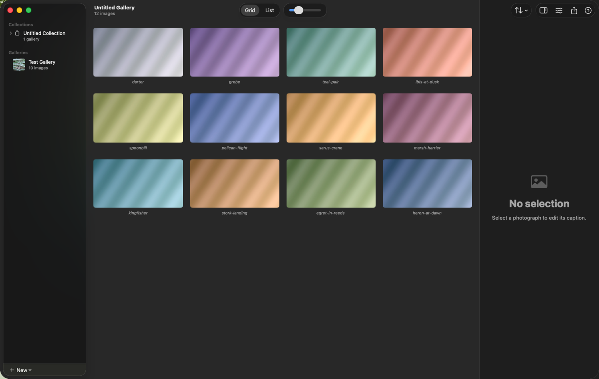
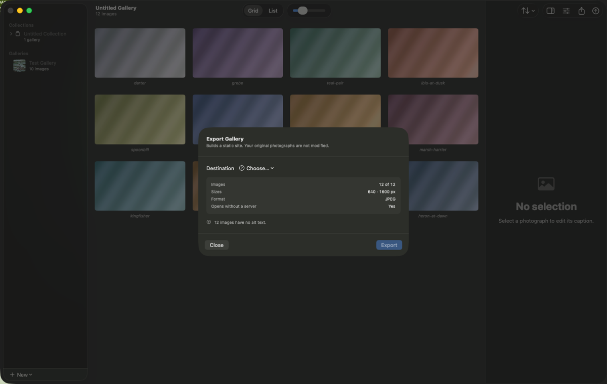
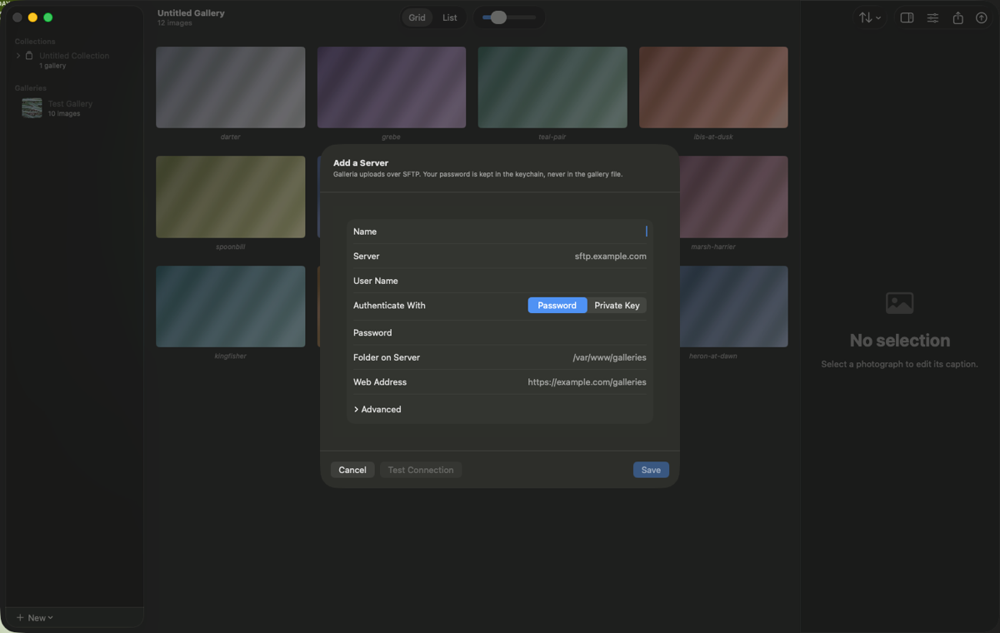

Galleria User Manual
Requirements: Version 1.0, requiring macOS 14 or later. Free for 30 days; after that $9.99 a year or $29.99 once.
Coming to the Mac App Store →What Galleria is for
Galleria builds an ordinary static website out of your photographs — HTML, CSS, and resized copies of your images — and puts it wherever you tell it to. There is no account to make and no platform to move into. The site it produces is a folder of files that will work on any web host, from a Raspberry Pi to a university server, and that keeps working whether or not you ever open Galleria again.
It is built around the way a photographer actually works: shoot, cull elsewhere, then put a chosen set online. Galleria does not try to be a library, a raw editor, or a place to store your work. It takes photographs you have already chosen and turns them into a website.
Galleries and where they live
A gallery is a document — a `.galleria` file you save wherever you keep your work. It holds the running order, the captions, the settings and a reference to each original photograph. It does not, by default, hold the photographs themselves: your originals stay where they are and are never modified.
That reference is the one thing to understand. Move or rename an original in the Finder and Galleria will usually follow it; delete it, or take away the drive it was on, and the photograph shows as Missing. Missing photographs are flagged before a publish rather than quietly dropped, and can be relinked.
File ▸ Consolidate Originals… copies every referenced photograph into the gallery file itself. After that the gallery travels between Macs on its own. It is a one-way trip — Galleria cannot un-consolidate, because it cannot invent the file references it never had — and the confirmation tells you how much space it will take first.
Building a gallery

Adding photographs. ⇧⌘A, or drag files or a folder onto the window. Dropping a folder adds the files in it; sub-folders are left alone unless you say otherwise. Galleria reads capture date, camera, lens and exposure from each file as it goes.
Ordering. Drag thumbnails to rearrange. ⌥⌘← and ⌥⌘→ nudge whatever is selected one place. The Sort menu orders the whole gallery by capture date, filename or title — useful as a starting point before you hand-tune the sequence.
Hiding. Right-click a photograph and choose Hide from Gallery. It stays in the document and stays out of the website. This is for the frame you might want back, rather than the one you want gone.
Captions and alt text. Select a photograph and use the inspector on the right. The caption is what visitors read. The alt text is what a screen reader says, and what shows if an image fails to load — it is a different sentence, describing what is in the photograph rather than commenting on it. Galleria counts how many are still empty and tells you before you publish, but will not invent them for you.
Making it look right
Settings live in their own window, per gallery. The ones worth knowing about:
Layout — justified rows, or a single column. Justified suits mixed orientations; a single column suits a sequence meant to be read in order.
Columns — set separately for phone, tablet, desktop and wide screens, so a gallery that looks right on your monitor is not four tiny columns on a phone.
Captions — always visible, on hover, in the lightbox only, or never.
Lightbox — on by default. It loads the current image and its immediate neighbours only, which is why a large gallery stays quick.
Pagination — above a threshold you set, the gallery splits into pages. A thousand photographs on one page is several hundred kilobytes of HTML before a single pixel loads.
Image sizes and format — the sizes generated per photograph, and JPEG or AVIF. AVIF files are smaller and slower to encode.
Colour — sRGB or Display P3. Either way the conversion is done properly rather than by re-tagging, and the profile is embedded.
Metadata — see the next section.
Footer — copyright, a contact address, and a link back to your own site.
What ends up in the published files
Galleria never publishes your originals. It writes resized copies, and what metadata survives is your choice:
Copyright only (the default) — your copyright and IPTC byline are kept; GPS and everything else goes. This is the setting most photographers want: publishing the exact coordinates of a nest, a den or your own house is a real harm, and stripping your own byline is not privacy.
Strip all — everything goes except the colour profile, which is always embedded. Without it a browser cannot know what your colours mean.
Keep all — everything survives, GPS included. Choose it deliberately.
Whatever you choose, orientation is baked into the pixels and the orientation tag is reset, so no browser rotates an already-rotated image a second time.
Publishing

⇧⌘E opens the export sheet. Destination is one control with two kinds of answer.
A folder. Choose one and Galleria writes the site into it. Double-click index.html and it opens straight from disk — no server needed to check your work. Upload it however you like.
A server. Choose Add Server… and fill in six fields.

Name — what you will see in the menu.
Server — the hostname. You can paste
user@host:/pathor ansftp://URL and it will split itself across the fields.User name — your SSH user.
Authenticate with — a password, or an SSH private key. Keys are read once and kept in the macOS keychain; because Galleria is sandboxed it cannot use
ssh-agent, so it needs the key itself.Folder on server — where the site goes, e.g.
/var/www/galleries.Web address — where that folder is reachable, so Galleria can offer you an Open Site button afterwards.
Then press Test Connection. It does the whole real thing — connects, checks the server’s identity, signs in, writes a file into the folder, reads it back and deletes it — and reports how fast it went. Doing that now is much better than discovering a permissions problem half-way through a four-gigabyte upload.
The first time you connect to a server, Galleria shows you its identity fingerprint and asks whether it is really your server. Nothing has been sent at that point — not your password, not your images. Check the fingerprint against what your host published, or run ssh-keyscan yourhost | ssh-keygen -lf - on a machine you trust. Galleria remembers it, and if it ever changes it stops and tells you rather than carrying on.
Publishing again. ⇧⌘P publishes to the same place with no dialog at all. Only what actually changed is uploaded — fix a caption on a four-hundred-image gallery and it sends a few pages and no photographs. If you rename a gallery, files already on the server are moved rather than uploaded again.
If something goes wrong. A publish can be cancelled or dropped at any point without breaking the live site: images are uploaded before the pages that reference them, so visitors never see a page pointing at something that is not there yet. An interrupted publish resumes where it stopped rather than starting over.
Collections
A collection publishes several galleries as one website, with an index page of cards linking to each. Make one with ⌃⌘N, add galleries to it, and export the collection rather than the individual galleries.
Each member gets a card title and an address, independent of the gallery’s own title.
Once published, addresses are frozen — so links people already have keep working, and Galleria warns you if an edit would change one.
A member can be hidden: kept in the collection, left out of the site.
Each gallery keeps its own layout and captions; image sizes, format and quality come from the collection, because mixed encoding across one site is a bug rather than a feature.
The 30 days, and what happens after
Galleria is free and completely functional for 30 days from first launch. Not a trimmed version — every feature, no watermark, no limit on how much you publish.
After that, exporting and publishing need either a subscription ($9.99 a year) or a one-time unlock ($29.99). Everything else keeps working, and this is deliberate:
Your galleries stay open, editable and organisable.
Consolidate Originals is never gated, so you can always copy every photograph back out at full resolution.
Everything you have already published stays published — those are files on your server, and Galleria could not remove them if it wanted to.
The subscription and the one-time unlock buy exactly the same thing. Which is better depends only on how long you expect to use it: about three years is the break-even.
Privacy
Galleria has no account, no telemetry, no analytics and no tracking of any kind. It makes exactly two sorts of network connection, both of which you cause: an SFTP upload to a server you configured, and the App Store’s own purchase traffic. There is no server of mine anywhere in the picture — I could not collect your data if I wanted to, because there is nowhere for it to go.
The full policy is on the Galleria privacy page.
Keyboard shortcuts
⌘N
New gallery
⌃⌘N
New collection
⌘O
Open
⌘S / ⇧⌘S
Save / Save As
⌘W
Close window
⇧⌘A
Add images
⌥⌘← / ⌥⌘→
Move selection left / right
⌘= / ⌘-
Larger / smaller thumbnails
⌥⌘I
Show inspector
⇧⌘E
Export gallery
⇧⌘P
Publish to the last destination
⌘Z / ⇧⌘Z
Undo / redo
⌘,
Settings